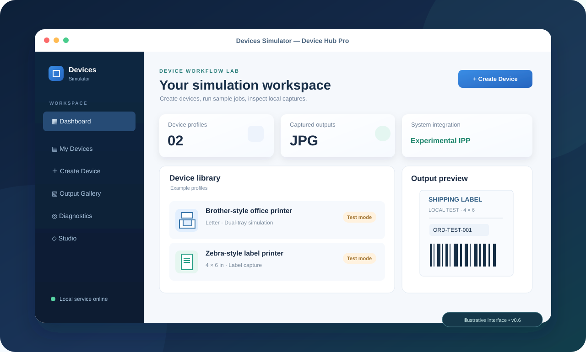
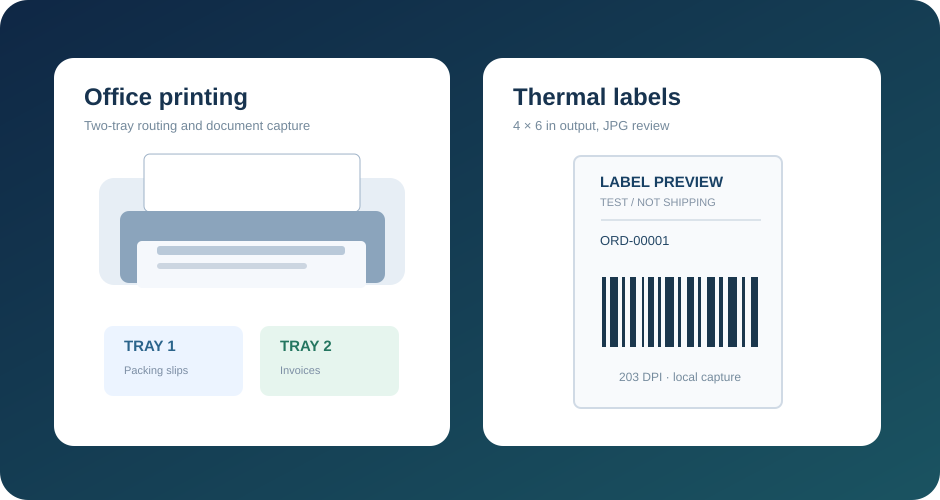

EXPERIMENTAL OS INTEGRATION
Office printing and dual trays
Create Brother-style printer profiles, configure tray behavior, and test local IPP printer queues. Examine the job instead of wasting paper.
Tray 01Packing slips
Tray 02Invoices
Build, debug, and demo software that prints documents, generates shipping labels, or accepts barcode input—without setting up a room full of hardware.

Illustrative product view. Device availability depends on platform and printer backend.
Every physical device introduces extra setup, maintenance, access constraints, and hard-to-reproduce bugs. Yet your application still needs to produce the right document, respect the right label size, and handle failure states.
Devices Simulator gives software teams a repeatable local test surface for print and device-dependent workflows. Keep the real hardware for final compatibility checks—not every iteration.
See how the workflow worksFrom simulated queues to captured labels, validate the parts of your integration that can be tested locally.
Create Brother-style printer profiles, configure tray behavior, and test local IPP printer queues. Examine the job instead of wasting paper.
Build Zebra-style label workflows, render a supported subset of ZPL, and review captured pages visually.
Save PDF, PNG, JPEG, and supported ZPL jobs as JPG images with original documents and job metadata.
Simulate offline, jammed, paper-out, and paused printers to exercise application error paths.
Use an in-app flatbed scan preview or macOS Accessibility-based barcode typing. Neither installs a native scanner driver.
Use the job list, debug states, and verification path to understand what happened between submission and capture.
View source & documentationSubmit realistic samples, let the simulated device process them, then inspect the output and any failures.
Pick a device profile
Office printer, shipping label or scan fixture.
Send a sample job
Import PDF, image or supported ZPL data.
Simulate processing
Normal, offline, jam and other test states.
Inspect the evidence
JPG output, job history and diagnostic details.

Designed for engineers and operators who need confidence before hardware deployment.
Reproduce print output and error scenarios across feature branches and test environments.
Review packing slips and 4 × 6 label layouts before trying them on physical thermal printers.
Check document handling and queue behavior early in the rollout process.
Show output flows in a controlled demo without carrying a printer fleet to every meeting.
Know what works locally, what is experimental, and what still needs platform engineering.
| Capability | Current status | Important note |
|---|---|---|
| PDF / JPG / PNG to local JPG | IN-APP | Captures output files; not physical paper |
| Brother / Zebra-style printer profiles | EXPERIMENTAL | Native queue registration subject to OS compatibility |
| CUPS print → JPG verification | EXPERIMENTAL | macOS / Linux; printer backend must accept the job |
| Partial ZPL renderer & printer faults | IN-APP | Unsupported ZPL commands reported explicitly |
| Flatbed scanner fixture | IN-APP | Does not appear as a native scanner |
| macOS barcode keyboard simulation | EXPERIMENTAL | Accessibility permission; not a HID driver |
| Native WIA/eSCL scanner or HID driver | PLANNED | Not implemented |
| Signed installers / PrintNode certification | PLANNED | Not implemented / not certified |
Built for evaluation, not physical fulfillment. A captured JPG is evidence of a simulated job, not proof of shipping, actual paper output, certified drivers, or real-world scanner compatibility. Your output files stay on your machine by default and may contain sensitive customer information.
Download a portable development build, create your first device profile, and capture a sample job in minutes.
Unsigned early-access executables. Python is bundled; platform prerequisites may apply.
Considering a pilot with your QA or engineering team? Here’s what you should know first.
Ask a question on GitHubNo. It accelerates local development and QA with simulated queues and captured output. You should still validate drivers, exact media handling and hardware behavior on the real devices before production rollout.
Brother-style and Zebra-style IPP queue registration is available experimentally. Whether the OS accepts the queue and can deliver document bytes depends on the host platform and print backend.
Not yet. The flatbed scan feature is an in-app fixture; macOS barcode input is keyboard-event simulation requiring Accessibility permission. Neither installs a native scanner/HID driver.
Core device profiles and document capture run locally without a cloud account. Internet access is needed to download builds, visit GitHub, or use external integrations.
Contact the maintainer to clarify licensing and business use. The repository has not yet established a commercial-use license or paid support agreement. Evaluate the current release as an experimental development tool.